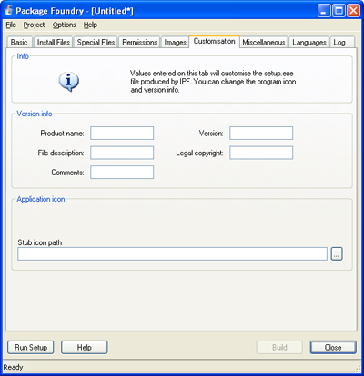

5.6. Stub Customisation
The executable file produced by IPF can be customised in several ways. Settings related to this feature are entered on the Customisation tab:

Version Info
The fields in the Version Info group are used to edit the version info resource of the installer. These settings will change the text displayed in the installer's Explorer tooltip. The text will also be shown if the user views the properties of the installer by right-clicking on the .exe in Explorer.
Application Icon
The installer's application icon can also be customised on this page. Enter the path to a .ico file in the Stub Icon Path field.
Copyright 2002-2005 ionCube Ltd. All rights reserved.